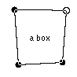
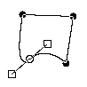

Bezier selection is a powerful tool in The Gimp. The rectangle- and ellipse-selections are not very flexible if you happen to need something more special. And since many of us gimpers don't have a graphics tablet, it's not so easy to make the mouse pointer move the way you want. Bezier selection fixes the problem by using smooth mathematical curves instead your own shaky mouse trail. Beziers are also very useful when used with gradient fills, see "Drawing Shapes with Bezier" for more information on this great tool.

Bezier selection is a tool to make complex selections by specifying certain points that are connected together with a curve. So to make a box you would specify four points, one for each corner of the box. Example is on the right side. The great thing is the corners don't have to be 90 degrees. After selecting the fourth point, click on the first point to close the curve (beziers have to be closed - at least at the moment in the current Gimp). Finally click inside our 'box' to turn it into a selection. Of course you can have as many points as you need.

Straight lines alone are a useful thing, but it's not all. Actually they are not lines but curves. Cool anti-aliased smooth curves.
The curves can be modified quite flexibly by adjusting the 'handles' of the nearest points. 'What handles?' you say... See the image above? The small
circles are those familiar points we used with the box in the previous section. The little boxes are those handles. The handles are not visible by default,
you must drag them 'out' from a point. To make the handles visible 1. click to a point to make it active, 2. click again on the same point and
3. drag the handles out with the mousebutton still pressed down. You notice the curves between the points are not straight anymore. You can control the shapes
by dragging the handles around.
- Always before modifying any points or handles, click the handle or a point to make it active
- To move just one handle and leave the opposite side in its place, click on the handle to activate it and press shift while dragging it
- To move the points around, activate a point (or its handle) and drag it around with ctrl pressed down
- When you are satisfied with the shape, click inside the curves to turn it into a selection
The original tutorial can be found here.